PRONTO PARA CONFERIR, com um defeito que vale consertar antes de levar ao Kaique: na aba Filtro, três cartões mostram a folha girada errado.
O girar faz o que promete. Os três botões e o Ctrl+seta giram a folha certa e para o lado certo. As cinco opções do "aplicar em" pegaram exatamente as folhas esperadas. Desfazer e refazer devolvem o giro de cada folha, e o giro continua lá depois de fechar e abrir de novo. As zonas da aba Marcar ficam sobre o mesmo pedaço do papel. O PDF sai com as folhas giradas, igual à prévia. Num projeto antigo, o giro espera a conversão das marcações e avisa ("Um momento"). Depois disso funciona, com as zonas no lugar.
O defeito (D1): com uma folha girada, os cartões Preto e branco, Melhorar e Mágico pro da aba Filtro mostram a folha girada duas vezes: ¼ vira meia volta, e meia volta volta para a posição de antes. Se a pessoa gira com a aba Filtro aberta, os três cartões nem mudam: só mudam quando ela sai da folha e volta. O PDF sai certo. O código errado é antigo (de 18/07), mas só aparece agora que girar ficou fácil.
Não é "aprovado": só o Samuel marca.
Defeito conhecido (decisão do Samuel, 28/09): a moldura dourada e a iluminura continuam sendo defeito conhecido da Fase 1. Este item não mexe em imagem: o PDF das folhas que ninguém girou saiu idêntico, pixel a pixel, ao do código de antes (
9d1b7c0).
O que foi conferido: ramo fase2-geometria, commits 1a5745d, c54692c, 9f8d4e5 e 0e59502 sobre 9d1b7c0. A janela real foi pilotada fora da tela, em 1600×821 px (1280×657 pontos, a escala de 125% deste PC), só com mouse e teclado nativos (mensagens do Windows para a janela de teste). A pasta de dados era só de teste. Nenhum projeto real foi aberto.
| Item | Como foi conferido | Resultado |
|---|---|---|
| (a) Testes automáticos (pytest, arquivo por arquivo) | máquina | 84 arquivos: 1589 passaram, 59 pularam, 0 falhas. Tempo somado: 619 s. Nenhum arquivo precisou ser repetido. test_girar.py: 34 passaram; test_girar_na_tela.py: 16 passaram |
(a) teste_botoes.py (cópia git archive, saida_teste própria) |
máquina | 159 ações, 0 falhas (eram 132 em 02/10). Inclui os três botões da barrinha em todas as abas, o menu Página e as cinco opções do "Aplicar o giro em" |
| (b) Girar ¼ à esquerda, ¼ à direita e meia volta, pelos botões e por Ctrl+← / Ctrl+→ | janela real + olho | Certo. ¼ à direita é no sentido do relógio. O Ctrl+seta gira e não troca de folha. A folha gira de 0,17 a 0,19 s depois do clique |
| (b) "Aplicar em", folha por folha, num livro de 10 folhas | janela real + máquina | Certo nas cinco opções (tabela abaixo). O menu Página marca a mesma opção da barrinha, e o contrário também vale |
| (b) Desfazer / refazer | janela real | Certo. Um Ctrl+Z desfaz o giro inteiro, mesmo quando ele pegou 10 folhas, e devolve o giro que cada folha tinha. O Ctrl+Shift+Z refaz |
| (b) Fechar e abrir de novo | janela real + máquina | O giro ficou: [90, 180, 270, 180, 0, 180, 0, 180, 0, 180] antes e depois. As zonas da Escola e do Palatino continuaram no mesmo lugar do papel (diferença 0,0) |
| (b) Zonas da aba Marcar depois de girar (antes/depois) | janela real + máquina + olho | Ficam sobre o mesmo pedaço do papel. A diferença medida na folha original foi 0,0 em todos os giros: Escola 7 com 26 zonas e 5 giros seguidos; Palatino 5 com 16 zonas, uma delas desenhada à mão com o Retângulo e girada pelo "todas" estando em outra folha. Nos prints, as zonas seguem o texto e a gravura |
| (b) O PDF sai com as folhas giradas e igual à prévia | máquina + olho | As 10 páginas saíram no giro certo. Prévia e PDF têm a mesma proporção em todas, e lado a lado são a mesma página. O PDF da janela é idêntico, pixel a pixel, ao feito sem janela com o código novo e com o 9d1b7c0 |
| (b) A barrinha cabe em 1280×657 sem espremer as abas | janela real + olho | Cabe, com o nome nos botões, também com 5 abas (Boécio, com "Onde cortar"). As abas mantêm a largura de sempre: 130, 96, 114, 97 e 84 pontos em 1000, 1120 e 1280 pontos. Em janela estreita (1000 e 1120 pontos), a barrinha mostra só os ícones, e o nome e a tecla aparecem no balão |
| (b) A tecla R continua no Retângulo | janela real | Certo. Na aba Marcar e na aba Bordas, O troca para a Elipse e R volta para o Retângulo, sem girar nada |
| (c) Projeto antigo (cópia do Boécio, 50 folhas, zonas no formato antigo) | janela real + máquina | O giro "todas", 0,6 s depois da tela aparecer (faixa em "Preparando as marcações… 14 de 50"), não girou nada e mostrou o aviso "Um momento". A conversão terminou uns 2 s depois. O Ctrl+→ girou as 50 folhas, e as zonas das páginas 1, 15, 26 e 50 ficaram no mesmo lugar do papel (diferença 0,0) |
(d) Páginas que ninguém girou, iguais ao 9d1b7c0 |
máquina | O mesmo projeto, sem giro, com o código novo e o antigo: 10 de 10 páginas do PDF idênticas e 10 de 10 prévias idênticas. As folhas 7 e 9 do livro misto, que não foram giradas, também saíram idênticas |
| (e) A janela nunca fica mais de 1 s sem responder | máquina (vigia dentro do programa, de 25 em 25 ms) | Girar nunca parou a janela (nenhuma parada de 0,25 s ou mais em nenhum giro, nem no "todas" de 50 folhas). Houve paradas de mais de 1 s fora do girar, em código que estes commits não tocam (veja Ressalvas) |
| Opção | Folhas que giraram | Frase no histórico |
|---|---|---|
| todas | 1 2 3 4 5 6 7 8 9 10 | Girar ¼ à direita: todas as 10 folhas |
| daqui em diante | 4 5 6 7 8 9 10 | Girar ¼ à direita: da folha 4 em diante (7 folhas) |
| só as pares | 2 4 6 8 10 | Girar ¼ à direita: as 5 folhas pares |
| só as ímpares | 1 3 5 7 9 | Girar ¼ à direita: as 5 folhas ímpares |
| só esta | 4 | Girar ¼ à direita: a folha 4 |
O livro de teste juntou 10 páginas-gabarito: Siebmacher 7 (deitada), Escola 7, Palatino 5, Siebmacher 9 (deitada), Palatino 7, 9 e 10, Boécio 3, Rhetorica 18 e Marial 7.
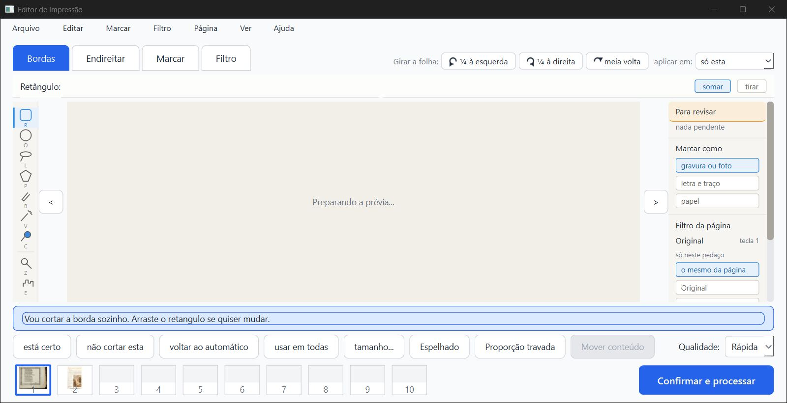
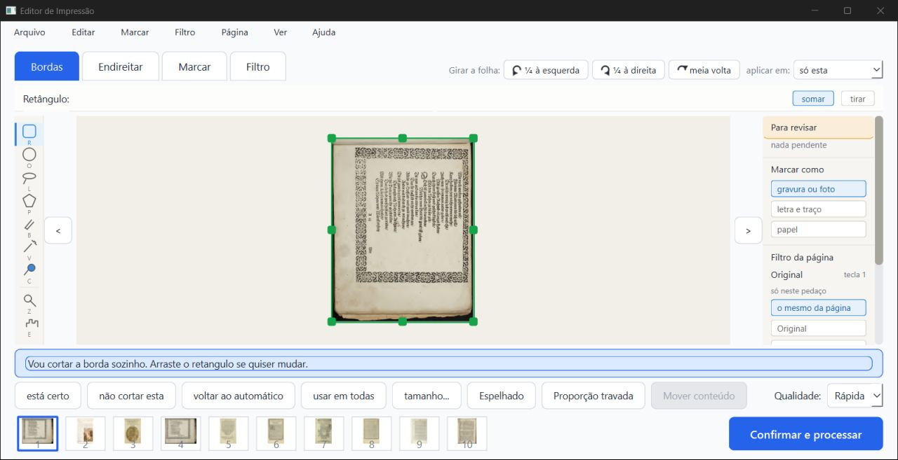
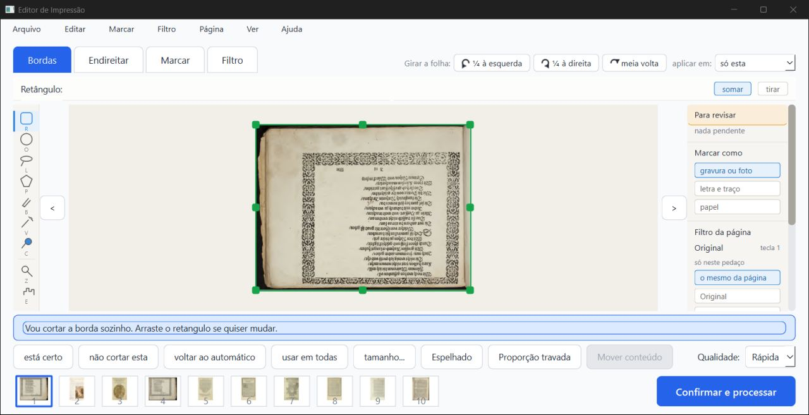
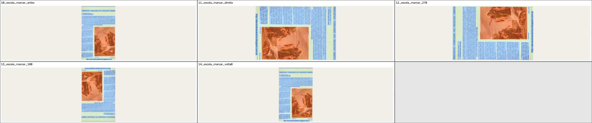
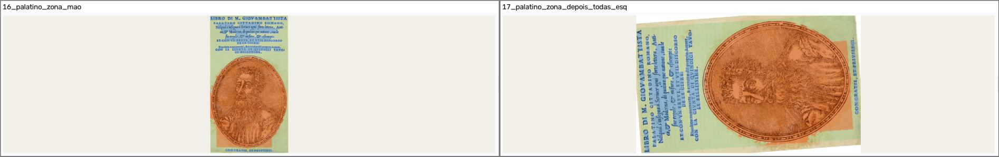
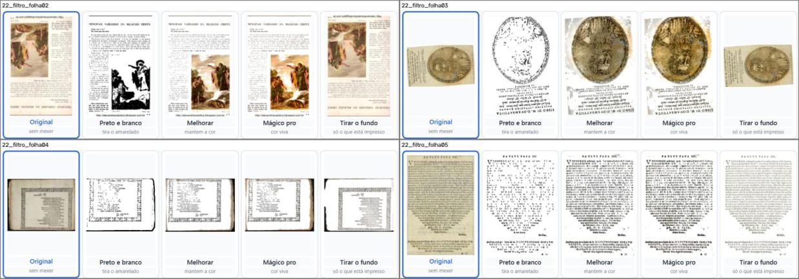
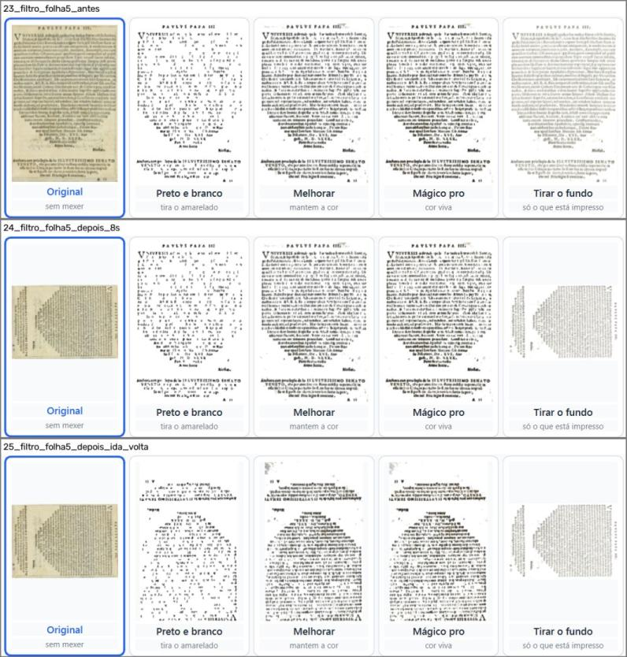
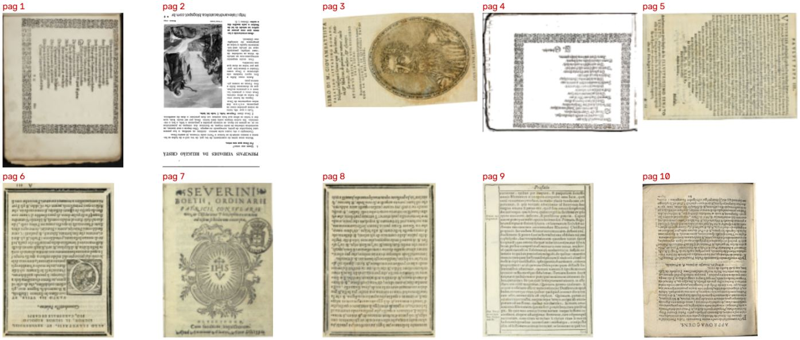
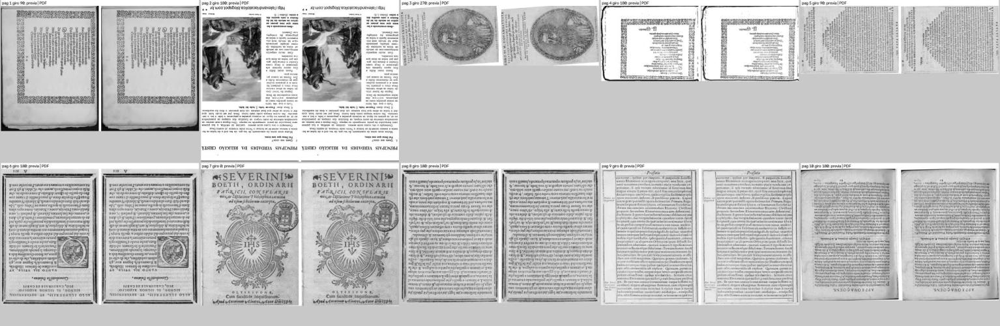
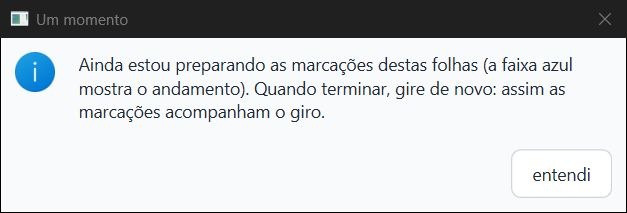
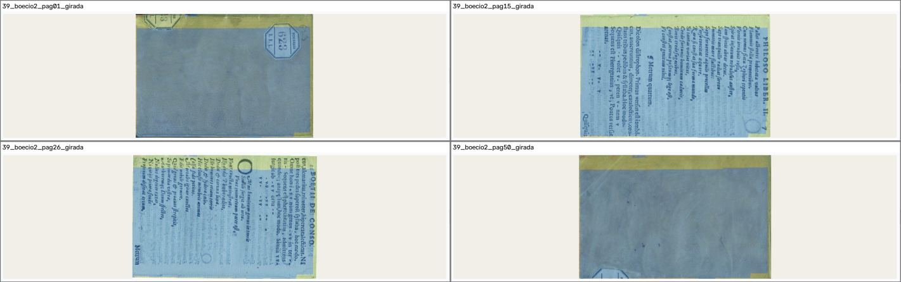
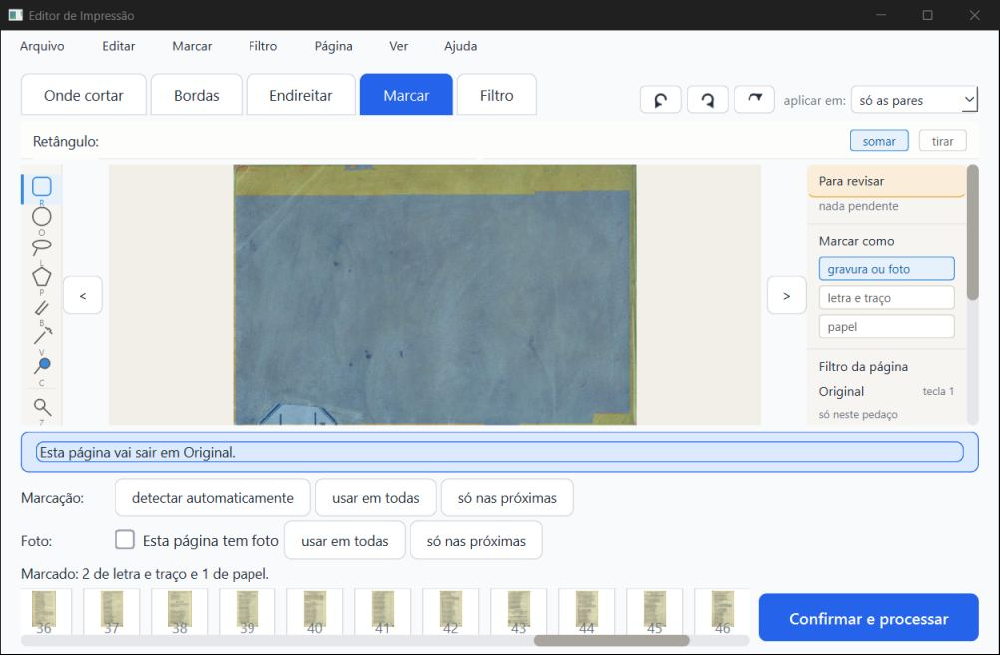
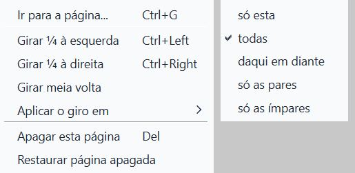
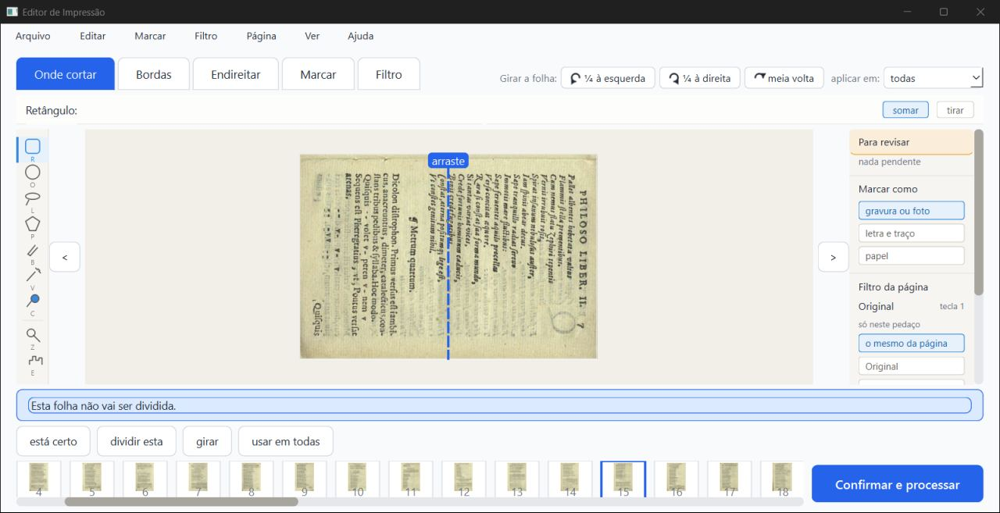
O teste oficial de velocidade (teste_velocidade.py, uns 12 minutos com o PC parado) não foi rodado. Estes commits não mexem no preparo nem nos filtros: o core/pipeline.py não mudou, e os PDFs saíram idênticos. Medi o mesmo projeto de 10 folhas processado sem janela: 15,6 s com o código antigo e 16,0 s com o novo, uma diferença dentro do normal de uma rodada para outra. Na janela, a folha gira de 0,17 a 0,19 s depois do clique.
ui/tela_conferir._imagem_sem_filtro usa previas.pegar_folha(...), que já vem girada (ui/tarefas._folha_crua, linhas 339 e 340), e depois chama pipeline.preparar_metade, que gira de novo;
- a chave do cache dos cartões (_cartoes_cache_chave) não leva a rotação.Esse código é de 18/07 (d9fae8c); antes, quase ninguém girava folha. O PDF e os cartões Original e Tirar o fundo estão certos. Não testei o cartão Preto e branco no modo Misto, que segue outro caminho no código (_cartao_do_misto).
2. D2, miniaturas (menor; para o layout). A tira de miniaturas embaixo e a capa do cartão na tela inicial mostram a folha como veio do scanner, sem o giro. Isso já era assim antes destes commits, mas agora aparece: depois do "todas", nenhuma miniatura muda.
3. D3, endireitar depois de girar (observação). O endireitar automático é medido de novo na folha girada. Numa folha que fica de lado, ele pode achar uma inclinação que não existe. Medido em todas as folhas do livro de teste:
- Palatino 5: 0,4° em pé, 4,3° deitada (90° e 270°). Na janela e no PDF ela sai torta (imagem do Palatino acima);
- Rhetorica 18: de −0,1° para −0,7°;
- Marial 7: de 1,2° para 0,5°;
- as duas Siebmacher ficam em 0° em todos os giros.
No uso normal (pôr em pé uma folha escaneada de lado), a medida é feita na posição final, que é a certa. O problema aparece quando a folha termina de lado. 4. D4, visto uma vez e não repetido. No primeiro "todas" da sessão, logo depois de andar da folha 1 até a 4 com ">", a tela mostrou a imagem da Escola (folha 2) no lugar da folha 4, com "atualizando…" (print abaixo). Tentei repetir quatro vezes, indo para folhas ainda não vistas no Boécio, e a página certa apareceu sempre. Pode ser uma prévia velha chegando atrasada. Vale ficar de olho.
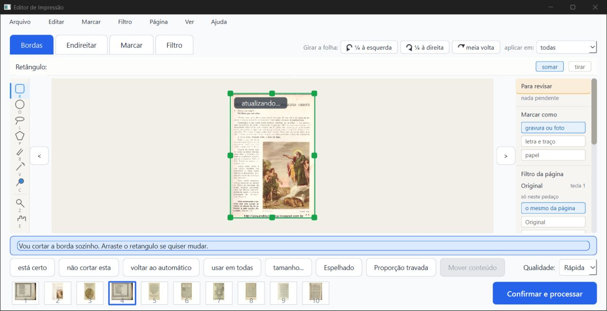
5. Teclas em inglês no menu. O menu Página mostra "Ctrl+Left" e "Ctrl+Right". O balão dos botões diz em português ("Ctrl+seta para a direita"). É o mesmo problema que já está na Lista de bugs ("teclas em inglês"). 6. "Aplicar em" gira cada folha a partir de onde ela está (giro relativo; decisão do implementador, escrita no código). O ScanTailor faz diferente: copia o giro final da folha da vez. Uma folha já girada recebe mais ¼ por cima. Para o caso comum (nenhuma folha girada ainda), os dois dão o mesmo resultado. É coisa para o Samuel e o agente de layout decidirem, junto com o desenho final da barrinha (decisão G1: "por enquanto pode ser assim"). 7. Durante a conversão, o "todas" não gira nem as folhas já convertidas. A ação inteira espera, e o aviso pede para girar de novo. Funciona e não estraga nada, mas a pessoa precisa clicar de novo. 8. Paradas de mais de 1 s, todas fora do girar (medidas pelo vigia dentro do programa): - 10 a 16 s montando a janela, ao abrir o programa, antes de ela aparecer; - 1,96 s logo depois de a janela aparecer, dentro do Qt; - 1,44 s ao clicar "continuar" no Livro de girar (a primeira página do folhear, pedida a outro processo); - 4,56 s no fim do "Processar", sem pilha anotada: a janela parou inteira, talvez enquanto o PDF era gravado.Também houve paradas de 0,5 a 0,75 s ao trocar de folha na aba Filtro. Nada disso está nos arquivos destes commits. Não comparei com o código antigo na janela. 9. Não testado: - roda do mouse (não funciona sem foco); - a escala real do notebook do Kaique; - o cartão do Misto (D1); - o teste oficial de velocidade.
Um print do Boécio feito com a caixa "Um momento" aberta saiu com a tela inicial no lugar da de conferir. A sonda dizia que a tela de conferir estava à frente, então parece defeito do print com a janela fora da tela, e não do programa.
imagens/p06 e p07.imagens/p14.relatorios/conferir/girar-2026-10-06/verificador/parecer-verificador-girar-2-3.html (também .md e .pdf)..../verificador/imagens/. Prints inteiros (fora do git): .../verificador/prints/..../verificador/trabalho/girar.log. Paradas: trabalho/paradas_*.log. pytest: trabalho/pytest_partes.log. teste_botoes: trabalho/teste_botoes.log. PDF e comparações: trabalho/saida_pdf/ e trabalho/sem_giro/. Ângulos por giro: trabalho/angulos/angulos.json..../verificador/scripts/.Editor de Impressão · gerado em 06/10/2026 às 06:46